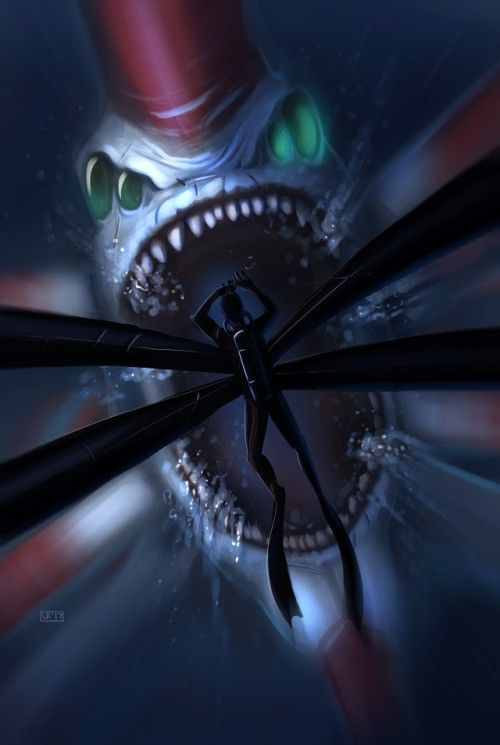

What makes Subnautica good?
Part of it is the scare factor.

One of the best things about Subnautica is that it's basically a horror game. Swimming around in the dark underwater caves, seeing things only by illumination of your flashlight. Hearing the sounds of ocean creatures all around you, big or small. There is the clicking sounds of the crabsquid, to the giant roars of a reaper.
Unkown Worlds (Subnautica devs) did this intentionally, so you would always be on your toes. This adds to the immersion factor, as being scared, or being chased by something is a nail-biting experience. To add on to all of this, the game has eccelent sound design, as you can hear the large roars of ocean creatures, even from your base.
Back to the index.